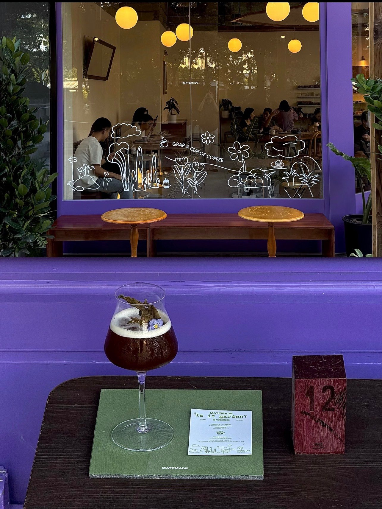
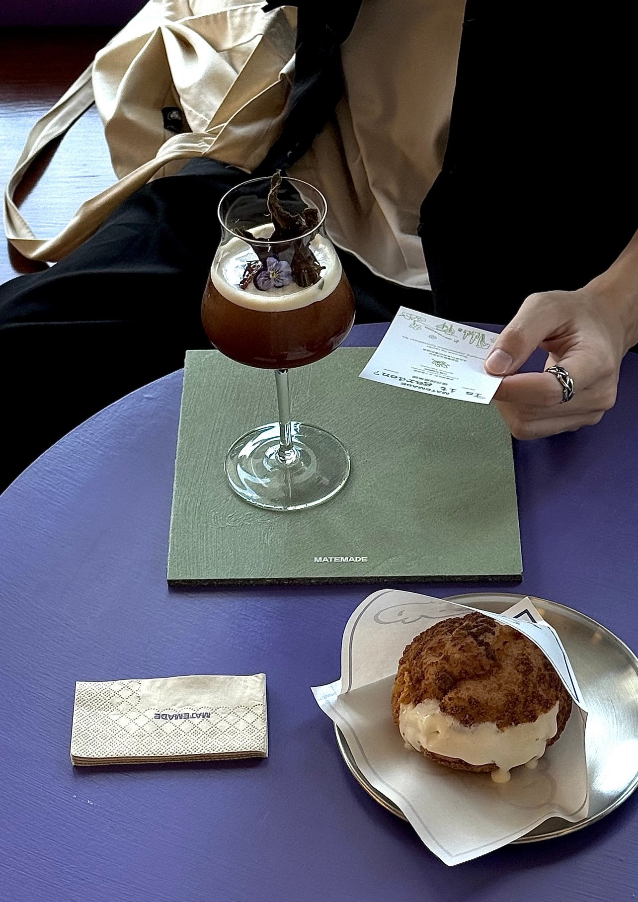

置顶
自己成为淬金的钥匙，
才能于不被定义的门扉间来去自如。

7:30 下午 · 10 月 29 日
8,466 浏览 5,200 点赞 33 转发
置顶
自己成为淬金的钥匙，
才能于不被定义的门扉间来去自如。

7:30 下午 · 10 月 29 日
8,466 浏览 5,200 点赞 33 转发
打开蓝色下划字体
黄昏后是一片蓝调沙滩

03:38 凌晨 · 11 月 2 日
2,309 浏览 866 点赞 61 转发
and more....